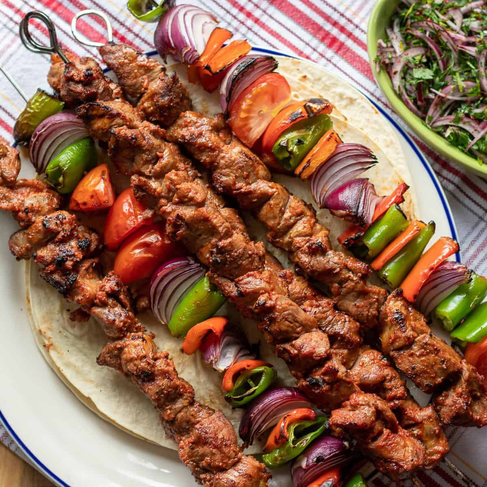

Instructions
| Prepare rice: | Cook short-grain rice and mix with rice vinegar, sugar, and salt. Let it cool. |
| Prepare fillings: | Slice fish (raw or cooked), veggies, or other toppings. |
|---|---|
| Prepare nori: | Place nori sheet on a sushi mat. |
| Assemble rolls: | Spread rice on nori, add fillings, and roll tightly. |
| Cut rolls: | Slice into bite-sized pieces. |
| Assemble nigiri: | Shape rice into small ovals, top with fish or fillings. |
| Serve: | Serve sushi with soy sauce, wasabi, and ginger. |

Rate:
TACOS
ingrediends
- taco shell(tortilla)
- protein(beef,chicken)
- lettuce
- cheese
- tomatos
- sour cream
- salsa
- guacamole
instructions
| Prepare taco shell: | Warm corn or flour tortillas on a griddle or pan. |
|---|---|
| Prepare protein: | Cook and season your choice of protein (beef, chicken, or pork). |
| Prepare toppings: | Shred cheese, chop lettuce, and dice tomatoes. |
| Assemble taco: | Place protein in the center of the tortilla, then top with cheese, lettuce, and tomatoes. |
| Serve: | Serve tacos with optional salsa, guacamole, and sour cream. |
Rate:
Kebab
Ingrediends
- Ground meat (beef, lamb, or chicken).
- Onions (finely chopped or grated).
- Garlic (minced or crushed).
- Fresh parsley (chopped).
- Spices:(Cumin, Paprika, Black pepper and Chili powder (optional)).
- Salt.
- Olive oil or vegetable oil.
- Lemon juice (optional, for marination).
- Yogurt (optional, for tenderness and flavor).
- Bread crumbs or soaked bread (optional, to bind the mixture).
Instructions
| Prepare the meat: | In a bowl, mix the ground meat with finely chopped onions, spices (cumin, paprika, black pepper), and salt. (Optional: Add garlic, parsley, or yogurt if you like). |
|---|---|
| Mix thoroughly: | Knead the mixture with your hands until everything is well combined and the texture is smooth. |
| Shape the kebabs | Take a portion of the mixture and mold it around the skewers, pressing it firmly to ensure it stays on the skewer. |
| Grill the kebabs: | Preheat the grill or BBQ. Place the skewers on the grill and cook, turning occasionally, until the kebabs are browned and cooked through (about 10-15 minutes). |
| Serve: | Remove the kebabs from the skewers and serve with your favorite sides like flatbread, salad, or rice. |
Rate:
